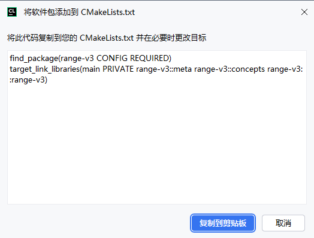
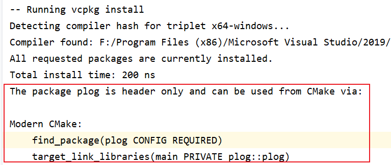

06 vcpkg用法
vcpkg用法
众所周知CMAKE只有项目构建的功能，而没有包管理的功能，因此之前要用第三方库的话，基本每次都得去github上下载，然后再写
CMakeLists.txt，这属实有点麻烦…因此有必要学一下包管理工具，使得在开发时，可以更简单的在项目中加入第三方的依赖
注意：vcpkg下载的都是源码然后自行编译，不是直接下载.lib，.dll文件的！！！所以他能管理的都是那些git上的开源代码库，比如：opencv、qt、ffmpeg…而像TensorRT这样的库是不能用vcpkg来安装的，还是得自行下载安装
1.使用基本流程
使用vcpkg的流程很固定，基本都一样：
1.下载并编译需要的库
1 | vcpkg install xxx # 会安装在vcpkg/installed目录下 |
2.在项目的CMakeLists.txt中加入vcpkg的TOOL Chain
1 | cmake_minimum_required(VERSION 3.15) |
3.在CMakeLists中通过find_package找到依赖
2.使用模式
vcpkg有两种使用模式：
经典模式
清单模式
2.1经典模式
这种模式是把库安装在vcpkg的全局目录下
- 优点：依赖只用安装一次，在所有工程中都可以使用
- 缺点：这种方法安装的第三方库的编译版本会和电脑的默认编译器一致，比如
mscv_64，这样的话，如果项目使用的不是电脑默认的编译器，那么第三方库就没办法使用了
使用方法：直接
vcpkg install xxxx就行了，安装的库会被放在vcpkg安装路径的/installed目录里面，CMAKE中的${_VCPKG_INSTALLED_DIR}变量就对应着这个目录
2.2清单模式
需要在项目中提供一个
vcpkg.json文件（类似于python的requirements.txt），里面描述了此项目所需的第三方库的信息，然后在执行CMKAE时，vcpkg会自动下载并使用当前CMAKE指定的编译器现场编译这些第三方库
- 优点：
- 不会像经典模式那样有兼容性问题
vcpkg.json显示地说明了项目需要哪些依赖项，比较直观
- 缺点：
- 用清单模式后就没办法用全局仓库里了，每个项目都得重新下载（如果之前下过有缓存就不会重新下了）并编译用到的第三方库，速度比较慢
- 下载的库会被放到项目
build/vcpkg_installed路径下而不是全局仓库，可能有些许占内存..
注意：
一个项目切换到清单模式后，就不能再切换回经典模式了
切换模式后，要删掉之前的
build目录，重新执行cmake
3.使用技巧
3.1在CMAKE中添加依赖
CLion中，可以自动生成把库添加到CMAKE中的代码，只要点击“安装”按键，安装完成后的提示里面就有CMAKE的代码，但是有些库可能没有，这就需要自己来写CMAKE代码添加了
在cmake的过程中，vcpkg其实会直接输出如何添加包到项目里面：
他这个里输出的CMAKE用法来自
vcpkg/ports/plog/usage这个文件，实际上每个库都有这个用法文件